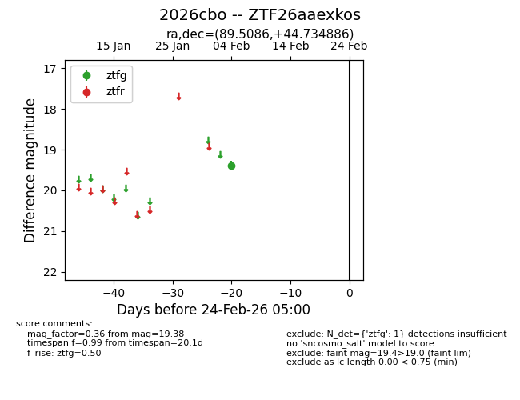
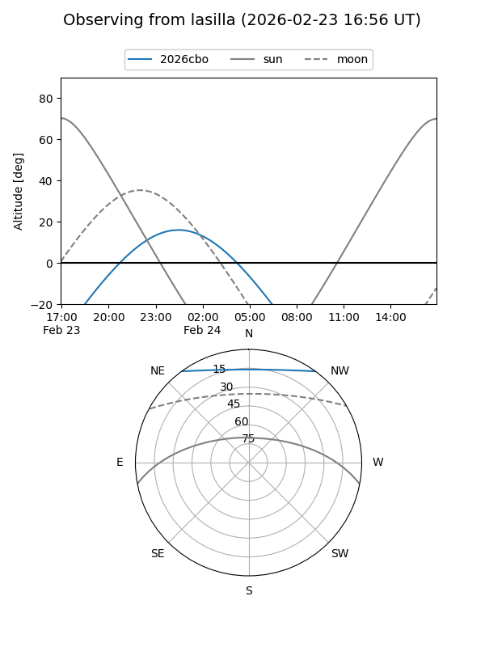
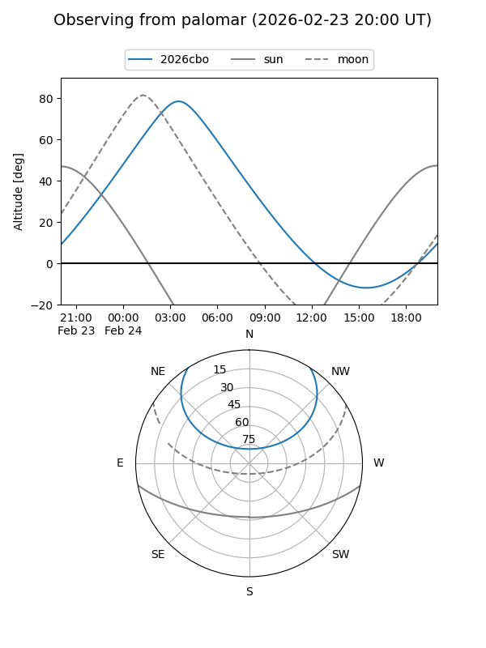

2026cbo
Target 2026cbo at 2026-02-24 09:08
Aliases and brokers:
FINK: link
Lasair: link
ALeRCE: link
TNS: link
YSE: link
alt names
ZTF26aaexkos (ztf,fink_ztf)
2026cbo (tns,yse)
Coordinates:
equatorial (ra, dec) = 89.5086,+44.73489
equatorial (HMS+DMS) = 05:58:02.05,+44:44:05.59
galactic (l, b) = (167.5195,+10.07544)
Flags:
Photometry:
last ztfg=19.38
1 ztfg detections
Lightcurve

Visibility


Additional plots